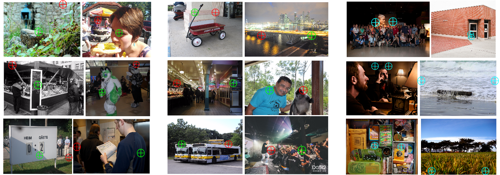

Figure 1: Example images and annotations. Green points are those annotated as closer in depth.
|
AbstractThis paper studies single-image depth perception in the wild, i.e., recovering depth from a single image taken in unconstrained settings. We introduce a new dataset “Depth in the Wild” consisting of images in the wild annotated with relative depth between pairs of random points. We also propose a new algorithm that learns to estimate metric depth using annotations of relative depth. Compared to the state of the art, our algorithm is simpler and performs better. Experiments show that our algorithm, combined with existing RGB-D data and our new relative depth annotations, significantly improves single-image depth perception in the wild.Publication
| ||
DatasetDownload [Annotations][Test Images (9 GB)][Train/val Images (47 GB)]CODECode for training and evaluation. [link]MiscThis work is also featured in the first release of the Wolfram Neural Net Repository. See this article for more details. | ||
CONTACTPlease send any questions or comments to Weifeng Chen at wfchen@umich.edu. |